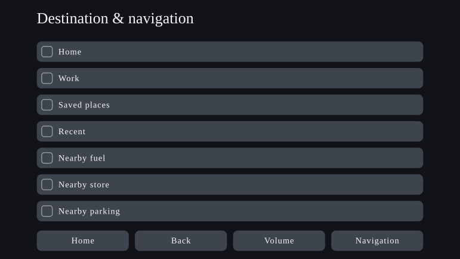
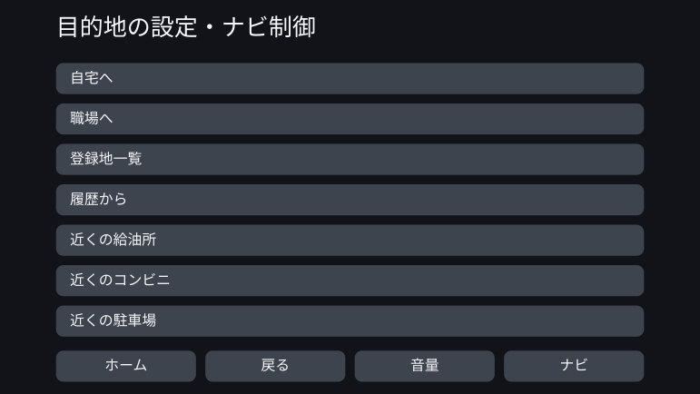
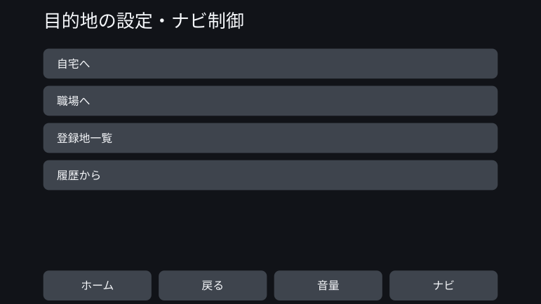

Personal Fit UI - 制約型デザインによるUIの個別最適化
2026年8月
概要
一つのUIを全員が同じように使う。そのマスプロダクションの前提を離れ、一人ひとりの認知・感覚・身体特性に合わせてUIを生成できないかを検討した。
目指したのは、利用中の状況に応じて画面が絶えず変わるUIではない。利用を始める段階でその人の特性を把握し、安全性やアクセシビリティに関する制約を守りながら、その人に合うUIをあらかじめ生成する仕組みである。
この検討では、私が「制約型デザイン」と呼ぶ考え方を実践した。人間が文献や規格をもとに、守るべき方向と境界を設計する。その内側でAIが具体的な値や表現を決め、生成物が枠に違反していないかを検証する。
PoCではカーナビを題材に、特性の異なる13体のペルソナへUIを生成した。その結果、大きな見た目の変化はほとんど生じなかった。一方で、制約を検証可能な形で書き下す過程から、個別最適化の余地がどこに残り、どこでは制約によって失われるのかが明らかになった。
一つのUIを、全員に渡すということ
現在の多くの製品は、マスプロダクションを前提に設計されている。一つのUIで、できるだけ多くの人をカバーする。文字サイズや表示項目数を変更できる製品であっても、自分に合う状態をユーザー自身が見つけ、設定する必要がある。
この方法は多くの人に対して機能する。しかし、「多くの人に合う」と「全員に合う」は同じではない。共通の設計基準を満たす製品であっても、そのUIを使いにくい人は残る。
車載UIの評価にも、この構造は現れている。米国NHTSAの運転中の視線に関する受入手続きは、すべての被験者が基準を満たすことを求めていない。合否判定は被験者24名のうち21名が基準を満たすことを条件とし、一定数が基準を満たさないことを制度の中にあらかじめ織り込んでいる。さらに、自動車メーカーが規制当局へ提出した資料では、複数の課題にわたり一貫して長く視線を外す人が、およそ6人に1人いると報告されている。なお、この資料は規制対象となるメーカーが基準の緩和を求めて提出したものである。本提案が目指すのは基準の緩和ではなく、個別化によって基準を満たせる人を増やすことである。
個別最適化されたUIの意義は、全員の画面を目新しくすることではない。画一的なUIでは取りこぼされていた人を、使える範囲、安全に操作できる範囲へ入れることにある。
これまでは、一人のために一つのUIを設計するコストが現実的ではなかった。AIを設計工程の一部として扱えるようになったことで、この前提が変わり始めている。
題材としてのカーナビ
このWorkの主題はカーナビではなく、個別最適化されたUIである。カーナビは、その可能性と限界を検証するための一例として選んだ。
車載UIは、限られた画面、短い視認時間、操作の安全性といった強い制約を持つ。出荷前には、多くの人が利用できる画一的なUIとして検証される一方、その設計が合わない人にも同じUIが提供される。
制約が厳しいこの領域で個別最適化が成立するなら、制約型デザインの考え方を具体的に検証できる。逆に、制約によってAIの自由度がほとんど残らない可能性もある。その両方を観察できる題材だった。
日本では2026年現在、OTA更新に対応する車種と、更新に対応しない従来型の工場装着ナビが併存している。また、地図データを更新できても、UIの基本構造が購入後に継続的に再設計されるとは限らない。本PoCでは、利用開始後にUIが頻繁には更新されないシステムを想定した。
個別最適化を、生成可能な仕組みにする
制約型デザインとは、枠組みを明確に決めたうえで、その内側をAIがニュアンスを捉えて柔軟に動けるようにする設計である。決められた表から値を取り出すパラメトリックな仕組みとは異なり、AIが探索できる解の範囲そのものを設計する。
科学的な知見が、常に具体的な数値まで与えてくれるわけではない。「大きくする」「情報を減らす」といった方向だけが示される場合もある。値まで決まる部分は規則として計算し、方向だけが分かっている部分では、制約が許す範囲内でAIが具体を決める。その区別を曖昧にしないことも仕組みの一部とした。
認知次元の確定
診断名ではなく、UIの使いやすさに関係する特性を軸として定義する。ワーキングメモリ、妨害刺激への耐性、視覚・聴覚特性、手指の巧緻性など。
マッピング表
ユーザーの特性を、動かすべきUIパラメータへ結びつける。どの特性が、何を、どちらへ動かすかを根拠とともに示す。
科学的知見・規格
安全基準、アクセシビリティ規格、認知科学の知見、一般的なUI設計原則を収集する。
制約条件群
生成物が必ず守る条件。理念に留めず、「満たしたか、違反したか」を検証できる形で記述する。
デザイン空間
文字サイズ、タッチ目標、表示項目数、情報階層、通知、語彙、順序、グループ化など、UIが取りうる選択肢。マッピング表が調整の方向を与え、制約条件群が許されない解を取り除く。
枠の中でAIが具体化する
残された自由度の中から、値・語彙・順序・群化を決める。別の検査によって枠への適合を確認し、条件を満たした個別最適化UIだけを出力する。
PoC：13体のペルソナにUIを生成する
PoCでは、特性の組み合わせが異なる13体のペルソナを用意した。これらは実在するユーザー分布を再現したものではなく、どの特性によってUIが変化するかを確かめるために、特性を意図的に配置した検証用の格子点である。
各ペルソナについて、共通の画一的なUIをbefore、その人の特性を入力して生成したUIをafterとして比較した。
ほとんど変化しなかった例
PS-01 — 基準（壮年・典型）
このペルソナは、認知・感覚・身体特性がいずれも典型的な範囲にある。個別最適化後は文字がわずかに大きくなったものの、表示される項目数、配置、タッチ領域の大きさはほぼ変わらなかった。
画一UI（before）

個別最適化UI（after）

視覚的な変化が現れた例
PS-12 — 壮年・巧緻性が低い（感覚・認知は典型）
このペルソナは、年齢、感覚特性、認知特性はPS-01と同じで、手指の巧緻性だけが低い。afterではタッチ目標が大きくなり、一画面に表示される項目が7項目から4項目へ減った。残りの項目は次の画面へ送られ、一つひとつの操作対象を大きく確保している。
画一UI（before）

個別最適化UI（after）

文献は、タッチ目標が満たすべき下限や、操作精度が低い場合に大きくすべき方向を示している。しかし、「この人にはどれだけ上乗せするか」までを一意には定めていない。その未確定部分を、AIが制約の範囲内で具体化した。
PoCの結果
視覚的に明確な変化が確認できたのは、13体のうちPS-12だけだった。多くのペルソナでは、beforeの画一的なUIがすでに十分に機能していた。個別最適化による恩恵は、少なくとも画面の見た目から認識できる形ではほとんど現れなかった。
PS-12では個別化を視覚的に示せたものの、この程度の変更であれば、既存製品の表示設定やアクセシビリティ設定でも実現できる。ユーザーが自分で設定しなくても、最初から合う状態を提供できることには意味がある。しかし、AIでなければ提示できない新しいUIを生み出したとはいえない。
この結果を、「AIによる個別最適化が成功した」とは結論づけなかった。
なぜ、差が生まれなかったのか
原因は、制約を満たすデザイン空間が狭かったことにある。
車載UIには、安全上の下限と上限が数多く存在する。文字やタッチ目標は一定以上の大きさを必要とし、一画面に表示できる情報量には上限がある。これらを順に適用すると、AIが選べる解はわずかしか残らなかった。
AIが具体化した項目の多くも、今回の規模では、人間が一度決めれば小さな対応表として固定できる範囲だった。これは「AIが不要だった」という意味ではない。文献が示していない具体値を埋める役割は担っていた。ただし、AIが探索するには、残された選択肢が少なすぎた。
一方で、語彙の言い換えには広い自由度が残った。しかし、その違いは画面構成の変化として見えにくく、人間が価値を認識できた領域と、規則では書き切れない領域が重ならなかった。
UIよりも、枠の設計に成果が現れた
このPoCで最も大きな成果が生まれたのは、UIを生成する段階よりも、その前に制約を設計する段階だった。規格や文献を、機械が検証できる条件として書き下していく過程で、枠そのものに複数の不整合が見つかった。
- 同じUI要素に対して、異なる規格が別々の下限を与えていた。
- 「走行中だけ適用する」という条件を、仕様に記述する場所がなかった。
- 本来は独立している二つの設計軸を一つにまとめたため、ほとんどの選択肢が制約によって排除されていた。
- どの制約がどの出力を支配するかをAIへ十分に伝えておらず、関係のない条件が判断に使われていた。
- AIに残すべき判断を実装側で固定し、制約型デザインを単なるルールエンジンへ近づけていた。
それぞれについて、AIが不整合を検出して該当箇所を示し、人間が判断し、制約を修正した。
つまり、今回の成果は「AIが新しいUIを作った」ことよりも、AIとの往復によって、UIを生み出す枠そのものが検証され、更新されたことにある。制約型デザインにおけるAIの役割は、完成物を生成することだけではない。生成する前に、ルール同士の衝突や、意図せず消されたデザインの可能性を見つけることにもある。
Future Work — 枠は明確に、枠の中は広く
制約型デザインにおいてAIに期待するのは、決められた値を表から取り出すことではない。明らかに不適切な生成物を制約によって除外したうえで、残された多数の可能性から、確率的に妥当性の高い解を提示すること。あるいは、人間が事前には思いつかなかったパターンを示すことである。
今回、その効果は十分に現れなかった。衝突がなかったからではなく、制約を満たすデザイン空間が狭く、「より適した解」や「新しい解」を選ぶ意味がほとんど残らなかったからである。
次に問うべきなのは、AIが有効かどうかではない。どの程度の広さを持つデザイン空間から、AIならではの効果が生まれるのか。
次の実践では、安全性を保ちながらも複数の妥当な解が残り、規則では書き切れない違いが、人間にも価値として認識できる題材を選ぶ。枠は明確に定める。しかし、その中にはAIが探索できる広さを残す。その両立が、制約型デザインを単なる自動化ではなく、AI時代のデザイン方法にする。